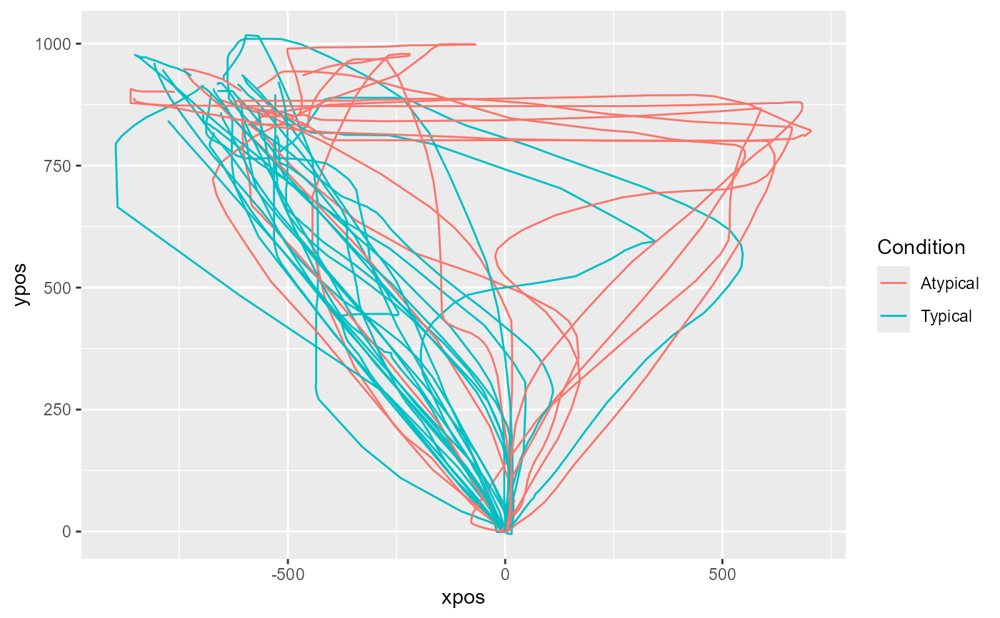
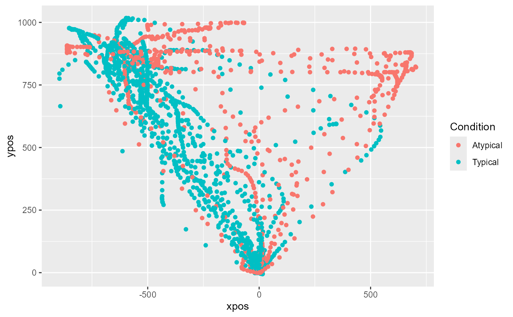

mt_plot can be used for plotting a number of individual trajectories.
mt_plot_aggregate can be used for plotting aggregated trajectories.
The color and linetype can be varied depending on a set of condition
variables using the color and linetype arguments. If the
x and y arguments are varied, this function can also be used
for plotting velocity and acceleration profiles.
mt_plot(data, use = "trajectories", use2 = "data", x = "xpos", y = "ypos", color = NULL, linetype = NULL, alpha = NA, size = 0.5, facet_row = NULL, facet_col = NULL, points = FALSE, only_ggplot = FALSE, mt_id = "mt_id", ...) mt_plot_aggregate(data, use = "trajectories", use2 = "data", x = "xpos", y = "ypos", color = NULL, linetype = NULL, alpha = NA, size = 0.5, facet_row = NULL, facet_col = NULL, points = FALSE, only_ggplot = FALSE, subject_id = NULL, ...)
Arguments
| data | a mousetrap data object created using one of the mt_import
functions (see mt_example for details). Alternatively, a trajectory
array can be provided directly (in this case |
|---|---|
| use | a character string specifying which trajectories should be
plotted. The corresponding trajectories are selected from data using
|
| use2 | a character string specifying where the data that contain the
variables used for determining the |
| x | a character string specifying which dimension in the trajectory array should be displayed on the x-axis (defaults to xpos). |
| y | a character string specifying which dimension in the trajectory array should be displayed on the y-axis (defaults to ypos). |
| color | an optional character string specifying which variable in
|
| linetype | an optional character string specifying which variable in
|
| alpha | an optional numeric value between 0 and 1 that can be used to make the plotted lines (and points) semitransparent. |
| size | an optional numeric value that can be used to vary the width of the plotted trajectory lines. |
| facet_row | an optional character string specifying a variable in
|
| facet_col | an optional character string specifying a variable in
|
| points | logical. If |
| only_ggplot | logical. If |
| mt_id | a character string specifying the internal label used for the
trial identifier (passed on to the group aesthetic). Only relevant for
|
| ... | additional arguments passed on to mt_reshape (such as
|
| subject_id | a character string specifying which column contains the
subject identifier. Only relevant for |
Details
mt_plot internally uses mt_reshape for reshaping trajectories
into a long format. Next, it creates a ggplot object using the
ggplot function of the ggplot2 package. The
aes mappings are taken from the function arguments for x, y
etc.; in addition, the group mapping is set to the internal trial identifier
(by default called "mt_id").
If only_ggplot==FALSE, the trajectories are plotted using the
geom_path function of the ggplot2 package. If
only_ggplot==TRUE, the ggplot object is returned without layers, which
can be used to further customize the plot, e.g., to specify a custom size for
the lines or to create semitransparent lines by specifying an alpha level < 1
(see Examples).
mt_plot_aggregate works similarly, but uses mt_aggregate for
reshaping and aggregating trajectories prior to plotting.
Please note that this function is intended as a quick and easy solution for visualizing mouse trajectories. For additional flexibility, we recommend that mt_reshape or mt_aggregate be used in conjunction with ggplot to create custom visualizations.
Functions
mt_plot: Plot individual trajectory datamt_plot_aggregate: Plot aggregated trajectory data
See also
mt_plot_add_rect for adding rectangles representing the response buttons to the plot.
mt_plot_riverbed for plotting the relative frequency of a selected variable across time.
mt_plot_per_trajectory for individually plotting all trajectories as individual pdf files.
Examples
# Load ggplot2 library(ggplot2) ## Plot individual example trajectories # Time-normalize trajectories mt_example <- mt_time_normalize(mt_example) # Plot all time-normalized trajectories # varying the color depending on the condition mt_plot(mt_example, use="tn_trajectories", color="Condition")# ... with custom colors mt_plot(mt_example, use="tn_trajectories", color="Condition") + ggplot2::scale_color_brewer(type="qual")# Create separate plots per Condition mt_plot(mt_example, use="tn_trajectories", facet_col="Condition")# Plot velocity profiles based on the averaged trajectories # varying the color depending on the condition mt_example <- mt_derivatives(mt_example) mt_example <- mt_average(mt_example, interval_size = 100) mt_plot(mt_example, use="av_trajectories", x="timestamps", y="vel", color="Condition")## Plot aggregate trajectories for KH2017 data # Time-normalize trajectories KH2017 <- mt_time_normalize(KH2017) # Plot aggregated time-normalized trajectories per condition mt_plot_aggregate(KH2017, use="tn_trajectories", color="Condition")# ... first aggregating trajectories within subjects mt_plot_aggregate(KH2017, use="tn_trajectories", color="Condition", subject_id="subject_nr")# ... adding points for each position to the plot mt_plot_aggregate(KH2017, use="tn_trajectories", color="Condition", points=TRUE)if (FALSE) { # Create customized aggregate trajectory plot # by using only_ggplot option to return a ggplot object without geoms # and by adding a geom to it with a custom line width mt_plot_aggregate(KH2017, use="tn_trajectories", color="Condition", only_ggplot=TRUE) + geom_path(size=1.5) # Create customized plot of individual trajectories # by using only_ggplot option to return a ggplot object without geoms # and by adding a geom to it with semitransparent lines # (by specifying alpha < 1) mt_plot(KH2017, use="tn_trajectories", only_ggplot=TRUE) + geom_path(alpha=0.2) }